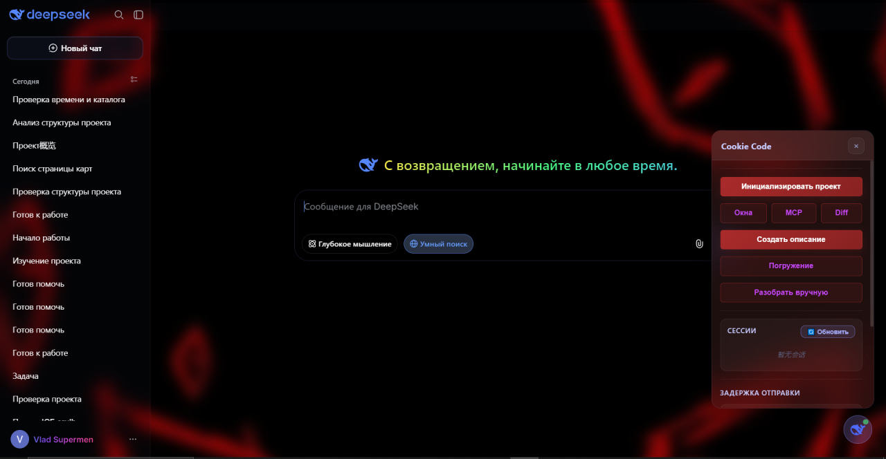
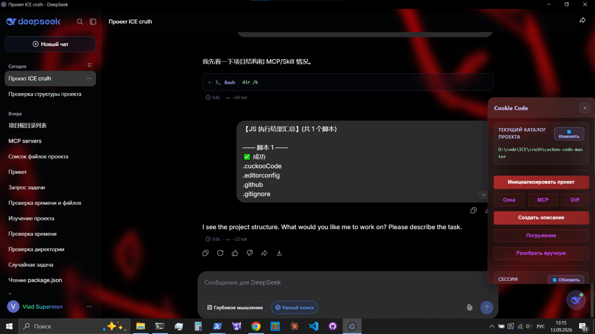
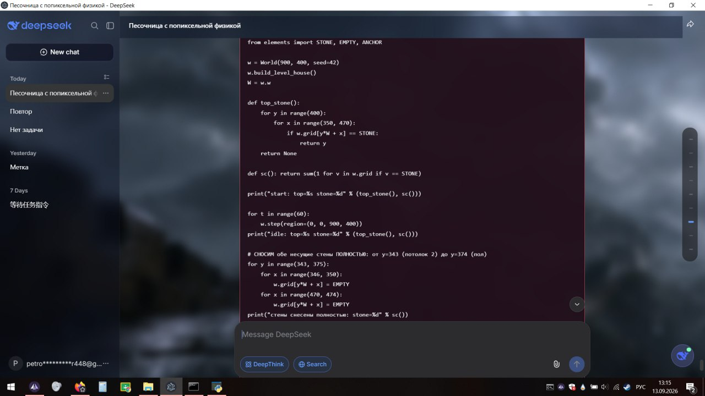
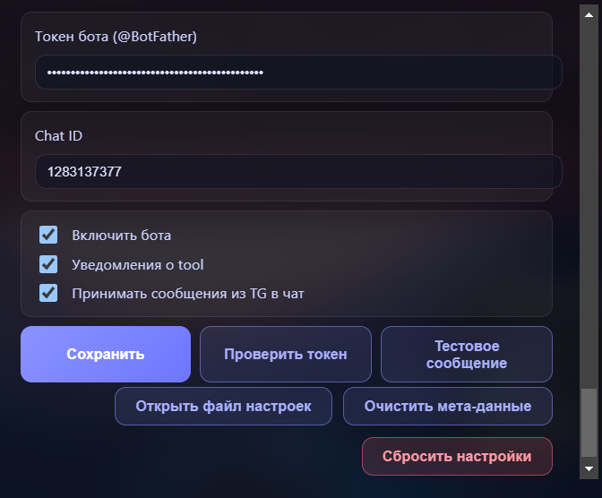
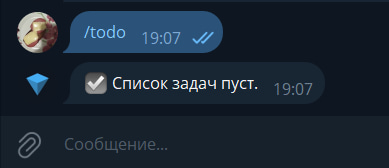
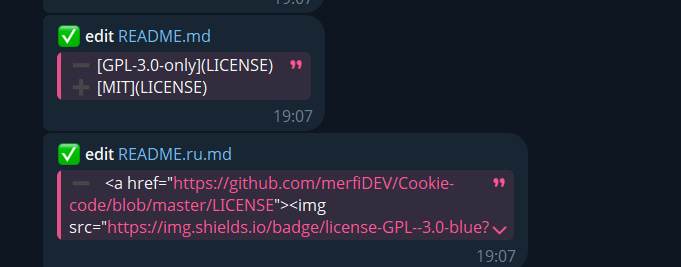
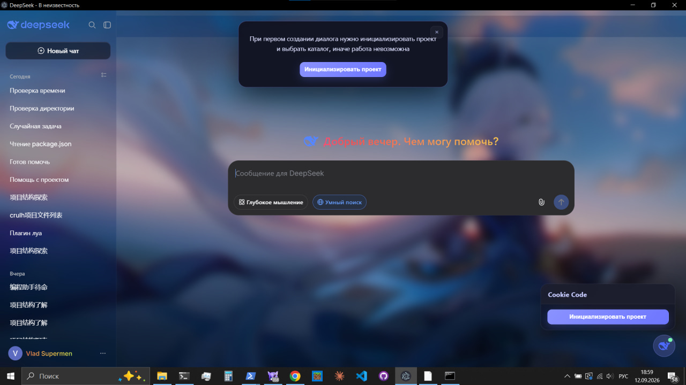

AI-агент на рабочем столе
с
нулевой стоимостью токенов
Cookie Code встраивает веб-чат DeepSeek в нативное окно Electron, добавляет боковой оверлей и превращает чат в локальный исполнитель. AI генерирует вызовы инструментов — они перехватываются, подтверждаются, выполняются в локальной песочнице и стримятся обратно в чат.

Зачем это нужно
-
savings
Нулевая стоимость токенов Всё идёт через обычный веб-интерфейс DeepSeek. Никакого API-ключа, никаких счётчиков.
-
autorenew
Настоящий агентный цикл Думай → Действуй → Наблюдай → Повторяй. Файлы, код, shell, БД, MCP — всё в одном цикле.
-
widgets
Нативная оболочка Electron-обёртка с собственным оверлеем, темами, стеклянным эффектом и настройками.
Возможности
Выполнение инструментов
AI отправляет вызовы как блоки JavaScript (cuckoo).
Каждый перехватывается, показывается в оверлее и выполняется в
песочнице Node. Ошибки подсвечиваются красным.
Инлайн tool-блоки
Каждый cuckoo-блок превращается в раскрывающуюся
карточку с иконкой, названием инструмента и подсказкой файла из
первого аргумента.
Мета ответа
Под каждым ответом AI — бейдж ⏱ 5.2s · ~380 tok.
Реальное время стрима и приблизительная оценка токенов.
Фоны и стекло
27 вручную отобранных обоев. Полный контроль над размытием и прозрачностью шапки, сайдбара и tool-блоков. Смена — мгновенная.
RGB-ник и акценты
Анимированный радужный градиент ника в сайдбаре. Настройка акцентного цвета кнопок панели и её фона через палитру MD3.
Telegram-бот new
Управление и наблюдение с телефона: уведомления о вызовах,
ответы AI, команды /todos, /settings,
входящие сообщения.
Поддержка MCP
Формат конфигурации, совместимый с Claude Desktop.
stdio и http-серверы, управление из
оверлея.
Авто-форматтеры
prettier, biome, gofmt, ruff, rustfmt, shfmt, clang-format — по расширению и конфигу проекта. Код AI приводится к стилю вашего проекта.
Инициализация проекта
Выберите каталог один раз — AI получает дерево и системный промпт, адаптированный к реальному проекту. Все пути — относительно него.
Пользовательские скиллы
Положите папку в .cuckoo/skills/<name>/ с
SKILL.md и опциональным tool.js — и
она вызывается через skillList,
skillLoad, skillExecute.
Безопасность
Гейт подтверждения вызовов (off / risky / all), таймауты 30–60 с, буфер 1 МБ, редактируемый блэклист опасных команд, ограничение путей каталогом проекта.
Персистентность сессии
Логин, проекты и настройки хранятся в userData приложения и переживают перезапуск. Восстановление вкладок — автоматическое.
Доступные инструменты
tools/cuckoo-tools.d.ts
| Инструмент | Описание |
|---|---|
| read, readLines | Чтение файлов (с номерами строк, offset/limit) |
| write, edit | Создание / изменение файлов (авто-форматирование при сохранении) |
| deleteFile | Удаление файла |
| glob, grep | Поиск по файлам (на базе ripgrep) |
| bash, pwsh | Выполнение команд в cmd.exe / PowerShell |
| todoWrite | Структурированный список задач |
| webFetch | Загрузка HTTP(S) как Markdown |
| mysql | SQL-запросы |
| mcpCall, mcpListServers, mcpGetTools | Инструменты MCP-серверов |
| skillList, skillLoad, skillExecute | Пользовательские скиллы |
| openBrowserWindow, injectJS | Окно браузера Electron + инъекция JS |
Скриншоты






Установка
Клонировать репозиторий
git clone https://github.com/merfiDEV/Cookie-code.git
cd Cookie-code
Установить зависимости
npm install # Если npm блокирует postinstall electron (allowScripts), одобрить: npm install-scripts ls npm install-scripts approve electron npm install
Запустить или собрать
# Запустить в режиме разработки npm start # Собрать установщик npm run build:win # Windows NSIS npm run build:win:portable # Windows Portable npm run build:mac:dmg # macOS DMG
Как пользоваться
1. Войдите в DeepSeek
Приложение сразу открывается в веб-чате DeepSeek. Используйте свой обычный аккаунт — никакой API-ключ не нужен.
2. Инициализируйте проект
Нажмите «Инициализировать проект» и выберите каталог. AI получает дерево каталога и системный промпт.
3. Общайтесь с AI
Просите отредактировать файлы, выполнить команды, найти что-то в коде. Всё выполняется локально в песочнице.
4. Наблюдайте цикл
Результаты автоматически отправляются обратно AI, и цикл продолжается, пока задача не будет решена.
Конфигурация
cuckoo-settings.json в userData
приложения
// cuckoo-settings.json { "background": "miku", "backgroundBlur": 0, "headerBlur": 12, "sidebarBlur": 12, "headerOpacity": 45, "sidebarOpacity": 45, "toolBlockOpacity": 55, "toolBlockBlur": 0, "rgbUsername": true, "formattersEnabled": true, "fileChipEnabled": true, "showProducedFiles": true, "language": "ru", "telegramEnabled": false, "telegramBotToken": "", "telegramChatId": "", "telegramNotifyTools": false, "telegramChatFeed": false }